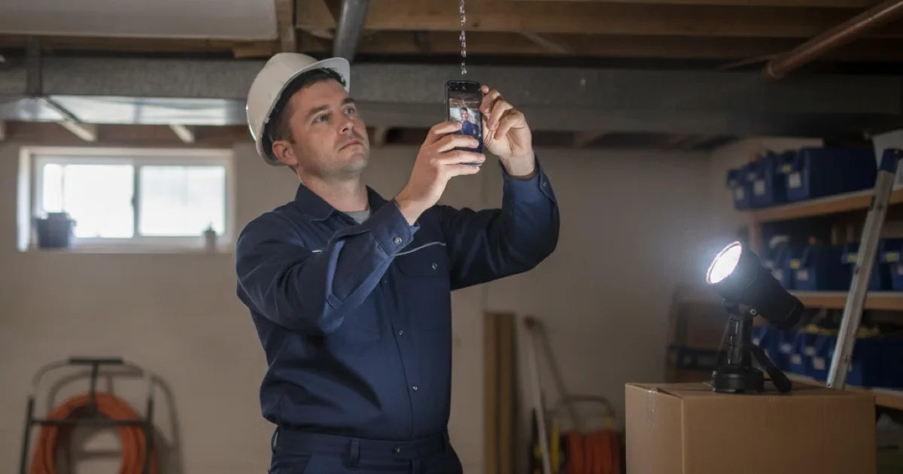

Water Damage Plumbing Repairs in Westchester County, NY
We’re the ones who stop the water and fix what failed. Getting that part documented properly also happens to be what your insurer will ask about first.
- Licensed & Insured
- Same-Day Service Available
- Emergency Plumbing Available
- Upfront Pricing

Stopping the water and drying out are two different jobs
When a pipe fails, two separate things need to happen, and they belong to two different trades. Knowing which is which saves you time at a moment when you don’t have much.
Stopping the source — that’s us
Finding what failed, shutting it down, and repairing it so it doesn’t happen again. Until that’s done, nothing else is worth starting: drying a room while water is still arriving achieves nothing.
Drying out and restoring — that’s not us
Industrial drying, moisture readings, mould remediation, and replacing damaged drywall, flooring, and insulation is specialist restoration work, with its own equipment and its own certifications. We don’t offer it and won’t pretend to. What we will do is tell you plainly when you need it, which is usually sooner than people want to hear.
The rough rule: if water sat for more than a day, or got into drywall, insulation, or under flooring, get a restoration company involved. If it was caught quickly on a hard surface, a plumbing repair and some fans may genuinely be the whole story.
What your insurer will want, and when
This is the part nobody tells you while you’re standing in it, and it’s worth five minutes of your attention because it affects what gets paid.
Most policies expect you to take reasonable steps to limit the damage once you know about it. That’s exactly what shutting off the water is. Doing it promptly, and being able to say when you did, works in your favour.
Practical order of operations:
- Stop the water first. Always. Nothing else matters until it stops arriving.
- Photograph before you clean up. Wide shots of the room, close shots of the failed component, and anything damaged. It takes two minutes and it’s the evidence you can’t recreate afterwards.
- Call your insurer early. Many have a preferred process and some want to appoint the restoration company themselves. Calling before committing to anyone avoids an awkward conversation later.
- Keep the failed part. If we replace a split section of pipe or a failed valve, ask us to leave it with you. Adjusters sometimes want to see the cause of loss.
- Keep every invoice, including ours for the emergency repair.
Consumer Reports has a useful walkthrough of how to file a homeowners insurance claim if you haven’t been through the process before.
One distinction that matters more than any other: insurers generally treat sudden, accidental damage differently from damage that built up over time through a slow leak. We can’t tell you how your policy will respond — that’s your insurer’s call, not ours — but we can tell you clearly what we found and what failed, which is usually what the question turns on.
The repairs we handle
Nearly all of our water damage work traces back to one of three causes.
The most sudden is shutting off and repairing a burst line — a supply pipe that lets go under pressure, which puts a remarkable volume of water into a house in a short time. Closely related, and seasonal here, is thawing and repairing frozen pipe, where the split often isn’t discovered until things thaw and water starts moving again.
The third is slower and, in damage terms, often worse: a leak that has been running quietly behind a wall or under a floor. Those need finding the leak that caused it before anything can be repaired, because the wet patch you can see is rarely where the water is coming from.
In every case the order is the same: stop it, find the real source, show you what we found, price the repair before starting. If you want the wider list of the plumbing repairs we handle, it’s all in one place.
How we handle the plumbing side
When a pipe fails, our job is to stop the water and repair what failed — find the actual source, shut it down, and make the repair properly so it does not happen again. Until that is done, nothing else is worth starting.
We trace the leak to where it truly began rather than the nearest wet patch, because water travels along joists and pipe runs before it appears. Then we show you what we found, price the repair before starting, and are honest about where our work ends and a restoration company’s begins.
Reducing the risk of the next one
Most of the failures that cause water damage here are predictable and, to a degree, preventable. Insulate pipes in unheated spaces against winter, replace old rubber washing-machine hoses with braided steel, and know where your main shut-off is before you ever need it.
Shutting the water off promptly is also the single thing that most limits damage when something does fail — and it is exactly what most insurance policies expect of you. A few minutes saved early saves far more later.
Common questions
Do you do water damage restoration and drying?
No. We stop the water and repair the plumbing that failed. Drying, moisture monitoring, mould remediation, and replacing damaged materials are specialist restoration work with separate certifications. We’ll tell you when you need that rather than stretching our scope to cover it.
Should I call my insurer or a plumber first?
Shut the water off, then call us, then your insurer. Stopping the damage is the step your policy expects of you, and it’s the one that gets harder to do the longer you wait on hold.
The ceiling is stained but I can’t find a leak. What now?
Water travels along joists and pipe runs before it appears, so the stain is often some distance from the source. It can also be a roof rather than plumbing. We trace it back properly, and if it turns out not to be plumbing we’ll say so.
Will you have to open up walls or ceilings?
Sometimes, but we work to open as little as possible and only once we know where we’re going. We’ll show you where and why before cutting anything.
How quickly does water damage become a mould problem?
Faster than most people expect once materials stay damp, which is the main argument for getting a restoration company in early rather than hoping it dries on its own. We’re not the ones to assess that — but we’ll flag it if what we’re looking at concerns us.
Stop the water, then sort the rest
Licensed, insured, and clear about which part of this is ours.